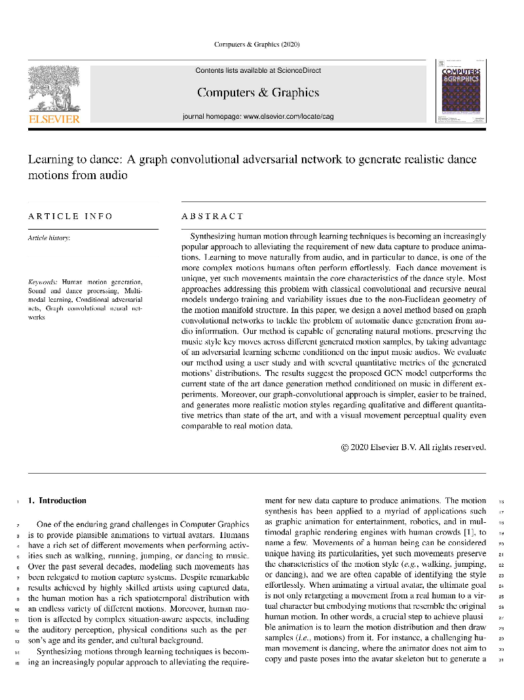

Learning to dance: A graph convolutional adversarial network to generate realistic dance motions from audio
Thiago Luange
Rafael Vieira
Renato Martins
Federal University of Minas Gerais
INRIA
Computer & Graphics

Abstract
Synthesizing human motion through learning techniques is becoming an increasingly popular approach to alleviating the requirement of new data capture to produce animations. Learning to move naturally from audio, and in particular to dance, is one of the more complex motions humans often perform effortlessly. Each dance movement is unique, yet such movements maintain the core characteristics of the dance style. Most approaches addressing this problem with classical convolutional and recursive neural models undergo training and variability issues due to the non-Euclidean geometry of the motion manifold structure.In this paper, we design a novel method based on graph convolutional networks to tackle the problem of automatic dance generation from audio information. Our method is capable of generating natural motions, preserving the music style key moves across different generated motion samples, by taking advantage of an adversarial learning scheme conditioned on the input music audios. We evaluate our method using a user study and with several quantitative metrics of the generated motions' distributions. The results suggest the proposed GCN model outperforms the current state of the art dance generation method conditioned on music in different experiments. Moreover, our graph-convolutional approach is simpler, easier to be trained, and generates more realistic motion styles regarding qualitative and different quantitative metrics than state of the art, and with a visual movement perceptual quality even comparable to real motion data.
Paper
-

Learning to dance: A graph convolutional adversarial network to generate realistic dance motions from audio
João P. M. Ferreira, Thiago Coutinho, Thiago Luange, Jośe neto, Rafael Vieira, Renato Martins and Erickson Nascimento. Learning to dance: A graph convolutional adversarial network to generate realistic dance motions from audio, Elsevier Computer and Graphics, C&A, 2020.
PDF, BibTeX@InProceedings{ginosar2019gestures,
author={S. Ginosar and A. Bar and G. Kohavi and C. Chan and A. Owens and J. Malik},
title = {Learning Individual Styles of Conversational Gesture},
booktitle = {Computer Vision and Pattern Recognition (CVPR)}
publisher = {IEEE},
year={2019},
month=jun
}
Demo
Code
[PyTorch]
Data

We present a large, 144-hour person-specific video dataset of 10 speakers, with frame-by-frame automatically-detected pose annotations. We deliberately pick a set of speakers for which we can find hours of clean single-speaker footage. Our speakers come from a diverse set of backgrounds: television show hosts, university lecturers and televangelists. They span at least three religions and discuss a large range of topics from commentary on current affairs through the philosophy of death, chemistry and the history of rock music, to readings in the Bible and the Qur'an.
Note: the data for Conan was updated recently to remove duplicate videos. The numerical results pertaining to Conan will be updated soon.
Acknowledgements
This work was supported, in part, by Nvidia, Petrobras, Cnpq, Capes and Fapemig.